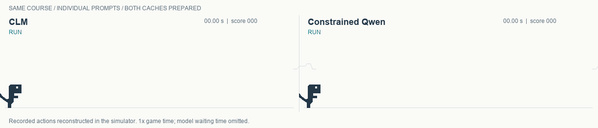

Constrained not Contrastive Language Models
A new wave of “decision models”—classifiers, in plain terms—has landed on the scene. TypeSafe AI’s Jev offers a commercial implementation, while open-source releases such as Contrastive Language Model (CLM) position themselves as competitors. Their promise is to make decisions faster than conventional language models.
This prompted our investigation: does a new decision model offer enough to justify the added machinery? In our 500-request function-selection experiment, CLM performed worse than a language model restricted to the same choices. When successive requests reused the same instructions and choices, the difference in median latency was small. In this setting, the extra trained component did not earn its place.
We compare CLM with constrained decoding using the same Qwen3-8B backbone. We use the released CLM scoring heads, its T-Rex simulator, and public BFCL data, following the repository’s implementation where possible. The authors’ exact BFCL test setup was not released. We are testing CLM against constrained Qwen, not reproducing the published comparison with Jev.
What is a decision model?
A decision model takes an input and selects from a fixed set of choices. The choices might be true or false, named categories, or ordered labels such as low, medium, and high. In a game, they are the available actions.
CLM uses an existing language model to encode the question and each possible answer—the “actions” in the paper—separately as vectors. It then passes them through two trained projection networks, one for the question and one for the answers. These are small multilayer perceptrons, or MLPs. A dot product scores each question–answer pair in their shared space, and the highest score selects the answer.
Constrain the language model instead
Our approach needs no additional trained component. We put the choices in the prompt and restrict the model’s output to one of them. To avoid generating a multi-word answer over several forward passes, we assign each choice a letter that is a single token. The model then chooses one permitted letter, such as A, B, C, or D.
For a request about a triangle, the choice mapping might be:
[System prompt: choose the function that fulfills the request] A = triangle_properties.get — triangle dimensions and properties B = circle_properties.get — circle dimensions and properties …
We choose the output token among the allowed choices with the highest probability mass. Thinking is not enabled.
Caching the actions
Qwen receives the instructions and available functions before the changing request. If a later request starts with the same tokens, it can reuse the model’s saved work for that prefix, called the KV cache. CLM can save each function’s action vector and reuse it whenever that function appears again.
Both caches start empty in the BFCL experiment below. For T-Rex, we prepare both fixed prompts before play, then time decisions with warm caches. Each model answers each request once. A first encounter pays the cost of processing new choices; later requests can reuse them. We report both the overall timings and the requests where both models reused all their fixed inputs.
Results
T-Rex
We use the T-Rex simulator from the CLM repository to compare the two approaches on repeated game decisions. Both receive the dinosaur’s position and motion and the nearest obstacle as text. Each chooses run, jump, or duck for the next six frames.
We use different prompts for each model because both needed extensive prompt tuning to play for 30 seconds without crashing. CLM needed many more worked examples and had much higher latency, even with cached input.

Decision time with warm caches
Across three tries with different seeds, median decision time was 182.5 ms for CLM and 113.4 ms for constrained Qwen. These timings compare the two working prompts, including CLM’s longer prompt and distance diagram.
| 900 decisions per model | CLM | Constrained Qwen |
|---|---|---|
| Median decision | 182.5 ms | 113.4 ms |
| Mean decision | 182.1 ms | 124.7 ms |
| 95th percentile | 229.7 ms | 192.3 ms |
Measured on an Apple M4 Max with the same BF16 Qwen3-8B backbone. CLM’s released scoring heads ran on the CPU. Timings include prompt construction, tokenization, cache copying, processing the new state, and selecting the action. One-time cache preparation and model loading are excluded. The game paused during inference, so this is not a test of uninterrupted real-time play.
BFCL: choosing a software function
We tested 500 examples from the Berkeley Function Calling Leaderboard (BFCL), giving each model a question and a set of tools and asking it to select the right tool. Both models received the tool names and descriptions, without parameter schemas.
This is a function-selection adaptation of BFCL. We check the selected function’s name; we do not generate or score its arguments, execute it, or report an official full-BFCL score.
| 500 requests | CLM | Constrained Qwen |
|---|---|---|
| Correct function choices | 362/500 · 72.4% | 477/500 · 95.4% |
We could not reproduce the CLM repository’s reported 95.2% BFCL accuracy in this experiment.

Latency with reuse across requests
Both caches started empty and warmed gradually as we worked through the benchmark, reusing instructions and tools from earlier requests. The table shows timings for the whole run and for the 264 requests where both models could reuse all fixed inputs. For these cached requests, median latency was similar: 83.0 ms for CLM and 86.7 ms for Qwen.
| Decision time | CLM | Constrained Qwen |
|---|---|---|
| Median · all 500 requests | 92.9 ms | 134.3 ms |
| Mean · all 500 requests | 202.9 ms | 148.8 ms |
| Median · 264 requests with both fixed inputs cached | 83.0 ms | 86.7 ms |
CLM’s mean was higher because encoding new tools one at a time made its first encounters slower.
Measured locally on an Apple M4 Max. CLM’s new actions were encoded sequentially, and its released scoring heads ran on the CPU. Its first-use timings should not be treated as an optimized batched server result.
Experiment details and saved results
We kept the original choices and their order, added no “no tool” option, and supplied no examples or answer hints. The accuracy difference included 131 requests where only Qwen was correct and 16 where only CLM was correct.
Each model answered each request once. We selected the requests randomly, then kept their order in the dataset. We did not group similar requests to create more cache hits, or answer a question twice to warm its cache. Both caches began empty, and the reported timings include the cost of processing new choices.
Qwen reused its entire fixed preamble on 264 requests. It reused only part of an earlier preamble on another 235; the first request had no cached tokens. CLM reused all its action vectors on 268 requests. On the 264 requests where Qwen’s whole preamble was cached, CLM’s actions were also cached.
The small difference in median latency on cached requests is not a test of statistical equivalence.
We used two categories, both asking the model to choose one function:
- Multiple: examples created by the benchmark authors. Category definition.
- Live multiple: examples collected from users’ actual requests and function descriptions. About the Live dataset.
| BFCL category | Requests | CLM | Constrained Qwen |
|---|---|---|---|
| Multiple | 78 | 63/78 · 80.8% | 77/78 · 98.7% |
| Live multiple | 422 | 299/422 · 70.9% | 400/422 · 94.8% |
| Combined | 500 | 362/500 · 72.4% | 477/500 · 95.4% |
Both approaches used the same original BF16 Qwen3-8B weights through MLX. CLM used its released PyTorch scoring heads on the CPU with four threads. Qwen selected among the permitted single-token labels using its native output weights. We alternated which model ran first for each request.
The sample used a fixed random seed of 20261004 and excluded the 20 requests in the preceding Qwen pilot. The 500 requests were drawn from the two categories combined, giving 78 Multiple and 422 Live multiple cases. These public data had been used in earlier CLM checks; this was not a newly held-out benchmark. The prompt was fixed before this run and was not tuned on its results.
Qwen retained up to 16 fixed preambles, discarding the least recently used when full. It could reuse any identical opening tokens from a retained preamble. It never cached the changing question for reuse. CLM retained projected action vectors in a 32 MiB cache and recomputed each request’s state. Four request texts occurred under different dataset IDs; no completed state-vector cache was used.
Each timing includes tokenization, cache lookup and maintenance, previously unseen inputs, and the final choice. Model loading, file writing, and a single unrelated runtime warmup are excluded. No benchmark request was repeated for timing. Cache-source records were checked against an independent simulation of the request order.
The saved data come from the pinned BFCL repository snapshot. The authors’ exact CLM-versus-Jev evaluation setup is unavailable, so this is not a reproduction of their published score. This 500-request run replaces the earlier 60-request BFCL comparison in this report.
Wikipedia: both struggled
In the earlier Wikispeedia experiment, we asked the models to reach a target Wikipedia article by following links. Across five test routes, with at most eight clicks each, Qwen finished one and CLM finished none. Both results were poor. They do not establish a useful navigation system or a reliable advantage for Qwen.
What this supports
In T-Rex, both models completed our short courses with their own prompts. Constrained Qwen made faster warm-cache decisions in this implementation. The result shows that both approaches can play these courses; it does not establish performance on longer games or other hardware.
For repeated function-selection tasks, constrained decoding is worth testing before adding a trained decision network. In this 500-request sample, it selected the correct function more often. When earlier requests had already populated both models’ caches, the difference between median decision times was 3.7 milliseconds. That conclusion is specific to this setup; it does not establish an advantage on every task or deployment.